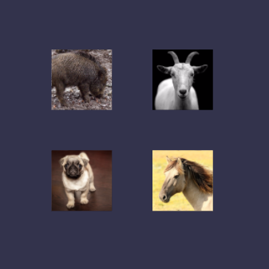
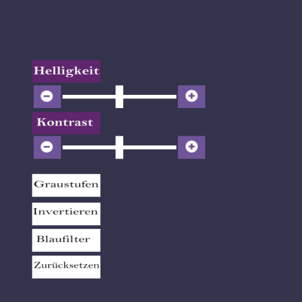
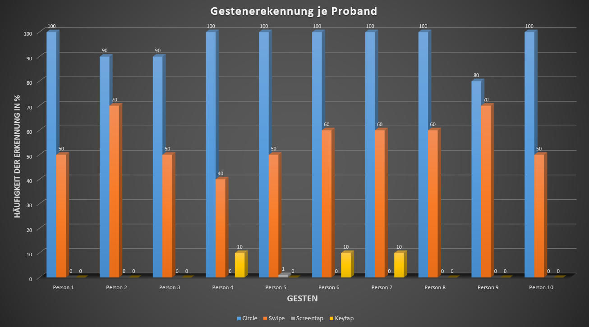
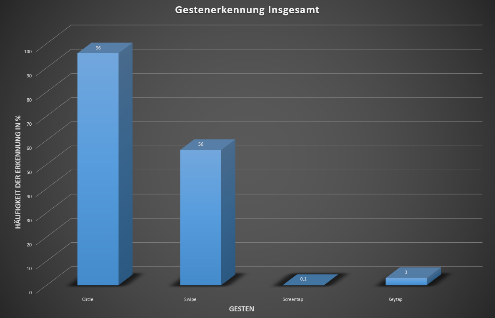

Folgende Befehle können ausgeführt werden: = Leap Motion = Sprachbefehle
Interaktion
Bildbearbeitung
Zur Bildbearbeitung muss ein Bild ausgewählt sein und je nach vorheriger Interaktion: sage "editieren"
BabylonJS Canvas Elemente
Erstellung von Elementen mit BabylonJS im 3D Canvas
Nachdem die üblichen Babylon-Konfigurationen (Kamera, Licht, etc.) gesetzt wurden, werden die einzelnen Elemente des Canvas aufgebaut. In dieser Szene sind das in erster Linie die Bilder und die Buttons/Slider zur Bildbearbeitung. Die Bilder werden in einer Schleife gesetzt. Zuerst wird eine Textur erzeugt mit einem Bild, diese Textur wird dann einem Mesh (Plane) zugeordnet.
var index = 1;
var gallery = new Array();
for (var x = 500; x <= 850; x += 200) {
for (var y = -400; y <= -100; y += 200) {
//Babylon Material/Textur erstellen und das Bild als Textur setzen
var materialPlane = new BABYLON.StandardMaterial("texturePlane" + index, scene);
materialPlane.diffuseTexture = new BABYLON.Texture("gallery/img" + index + ".jpg", scene);
materialPlane.specularColor = new BABYLON.Color3(0, 0, 0);
//Zeige eine Vorder-und Rückseite
materialPlane.backFaceCulling = false;
//Erstelle für das Bild ein Mesh in Form einer Plane welches das oben angegebene Material, also das Bild als Textur hat und folgende Koordinaten und Größe
var plane = BABYLON.Mesh.CreatePlane("image" + index, 120, scene);
plane.material = materialPlane;
plane.position.y = y;
plane.position.x = -x;
plane.position.z = 0;
plane.isPickable = true;
gallery.push(plane);
index++;
}
}
Ergebnis: 
Ähnlich werden auch die Buttons und Slider, also die GUI für die Bildbearbeitung erstellt. Ebenfalls mit Babylon-Planes.
//Babylon Material wird erstellt um eine Textur zu erstellen
var sliderMateriaContrast = new BABYLON.StandardMaterial("texturePlane" + index, scene);
sliderMateriaContrast.specularColor = new BABYLON.Color3(0, 0, 0);
//Zeige eine Vorder-und Rückseite
sliderMateriaContrast.backFaceCulling = false;
//Erstelle für den Slider eine Plane welches das oben angegebene Material als Textur hat und folgende Koordinaten und Größe
var sliderContrast = BABYLON.Mesh.CreatePlane("sliderContrast" , 10, scene);
sliderContrast.material = sliderMateriaContrast;
sliderContrast.scaling.x= 30;
sliderContrast.position.y = canvas.height/2.80;
sliderContrast.position.x = -640;
sliderContrast.position.z = 0;
sliderContrast.isPickable = true;
Ergebnis: 
Leap Motion
Interaktion durch Gestenerkennung
Im Leap loop werden mittels Switch-cases die momentan möglichen Interaktionsmöglichkeiten eingegrenzt. Dies ist besonders sinnvoll, da die Leap Motion Sensoren sehr sensibel sind und jede noch so kleine Bewegung wahrnehmen können, sodass Gesten und Bewegungen nicht selten nicht klar voneinander unterschieden werden können. Bei Spielanfang ist der erste Case 1 gesetzt, das bedeutet per Leap kann man nur eine Interaktion machen und diese ist: auswählen. Der Nutzer soll also ein Bild auswählen. Wie geschieht dies?
Der rechte Zeigefinger (man kann jeden ausgesterckten Finger der rechten Hand nehmen, aber mit dem Zeigefinger ist es am einfachsten) wird als Cursor mit der Leap Motion getrackt und die aktuelle Position des rechten Zeigefingers in der Leap Motion Interaktionsbox wird einem 2D HTML Element, einem kleinen Kreis, zugeordnet.
//Wenn ein Finger der rechten Hand erkannt wurde
if (frame.pointables.length > 0 && frame.hands[0].type === "right") {
//Die stabiliserte Position des Fingers, d.h. das z.B. das normale unmerkliche Zittern der Hand nicht in die Berechnung einfließt
var positionLeap = frame.pointables[0].stabilizedTipPosition;
//Normalized = normalisierte Koordinaten der Fingerposition innerhalb der Interaktionsbox, welche eine Kastenförmige Region innerhalb des Leap-Motion Sichtfeldes ist
var normalized = frame.interactionBox.normalizePoint(positionLeap);
//complete hand tracking data of current frame
var hand = frame.hands[0];
//Cursor-Position wird aktualisiert mit den x und y Werten der normalisierten Position der Leap
cursor.style.left = (canvas.width * normalized[0]) + 'px';
cursor.style.top = (canvas.height * (1 - normalized[1] )) + 'px';Man kann die Position des Cursor auch anders umrechnen und zwar so wie es beim Laden der Szene mittels der Methode Project gemacht wird:
//Project-Methode wurde im "Learning Babylon.js" Buch von Julian Chenard gefunden
//folgende Funktion erstellt die Transformationsmatrix der Szene. Ohne dieses Kommando läuft der Rest nicht
scene.updateTransformMatrix();
//3D Position
var _3Dposition = new BABYLON.Vector3(1, 1, 1);
//Project Methode um 3D Positionen (3D Vektor) in eine 2D Position umzuwandeln
var _2Dposition = BABYLON.Vector3.Project(
_3Dposition,
BABYLON.Matrix.Identity(), //world matrix
scene.getTransformMatrix(), //transformation matrix
scene.activeCamera.viewport.toGlobal(engine) //viewport
);
//Mit der _2Dposition wird nun die Position des Cursors gesetzt
cursor.style.left = _2Dposition.x + 'px';
cursor.style.top = _2Dposition.y + 'px';Bei jedem Frame wird der Bewegungsvektor zwischen dem Frame vor 30 Frames und dem jetzigen Frame verglichen.
//der Frame vor 30 Frame (Klick-Event wird ausgelöst, wenn der Finger für 30 Frames ungefähr an der gleichen Stelle ist)
var tenFramesBack = controller.frame(30);
//der Bewegungsvektor zwischen dem Frame vor 30 Frames und dem jetzigen Frame
var movement = hand.translation(tenFramesBack);Sollte der Finger auf ungefähr der gleichen Stelle geblieben sein (Bewegung unter 1) dann wird ein Klick-Event ausglöst
//Ein Klick-Event wird simuliert mit scene.pick und den 2D Koordinaten des Cusrsor
var pickResult = scene.pick(rect.left, rect.top);Wenn sich an der Stelle auf die geklickt wird ein Bild befindet wird dieses ausgewählt, dass bedeutet als momentan selektiertes Mesh gesetzt und in vergrößerter Darstellung auf dem Bildschirm angezeigt.
Nachdem ein Bild ausgewählt wurde kann man kein weiteres Bild mehr auswählen bis der Nutzer mit dem Sprachbefehl "okay" das Bild wieder abgewählt hat.
Nachdem das Bild ausgewählt wurde wird automatisch in den Editiermodus gewechselt, man kann nun also die Sprachbefehle zu Bildbearbeitung geben oder das Bild drehen/bewegen mit den entsprechenden Befehlen.
Neben den Sprachbefehlen kann man die Bildbearbeitung auch mit Gesten ausführen. Die Interaktion mit den Button funktioniert nach dem gleichen Muster wie bei der Auswahl des Bildes.
Nachdem ein Bild selektiert wurde wird das aktuelle Bild, also die Textur des aktuell ausgwählten Mesh, in einem 2D Canvas auf der Seite geschrieben.
Bei Befehlen die das Bild verändernden, wie zum Beispiel Graustufen wird dann folgenderweise vorgegangen:
var grayscale = function () {
//wenn ein Bild ausgewählt ist
if (currentPickedMesh) {
var canni = document.getElementById('imgcanvas');
var ctx = canni.getContext('2d');
//Die Bildaten des aktuellen Bildes auf dem 2D Canvas
var imageData = ctx.getImageData(0, 0, canni.width, canni.height);
var data = imageData.data;
//Pixel Manipulationen
for (var i = 0; i < data.length; i += 4) {
var avg = (data[i] + data[i + 1] + data[i + 2]) / 3;
data[i] = avg;
data[i + 1] = avg;
data[i + 2] = avg;}
ctx.putImageData(imageData, 0, 0);
var dataURL = canni.toDataURL("image/jpg");
//unbedingt notwendig, sonst akzeptiert CreateFromBase64String die Daten nicht
dataURL.replace(/^data:image\/(png|jpg);base64,/, "");
//Es wird eine neue Textur erstellt welche dann dem momentan ausgewählten Mesh zugewiesen wird.
var materialPlane = new BABYLON.StandardMaterial("texturePlane", scene);
//CreateFromBase64String = Die dort anzugebenen Daten sind schlecht dokumentiert und nur auf die hier angegebene Art und Weise zu erstellem
materialPlane.diffuseTexture = new BABYLON.Texture.CreateFromBase64String(dataURL, "newimageGrayScale", scene);
Man kann das ausgewählte Bild auch bewegen (Sprachbefehl: Verschieben). Dies macht besonders Sinn wenn man vorher "Boden" gesagt hat und dann versucht das Bild auf einem der Sockel zu platzieren. Sobald das Bild den Sockel berührt wird dies über die Analyse-Box auf der linken Seite angezeigt. Sagt man dann "Okay" kann man das nächste Bild auswählen und mit verschieben platzieren.
Man kann verschiedene Ansätze nutzen um Bewegungen welche mit der Leap Motion getrackt werden auf die Babylon 3D Szene zu übertragen. In diesem Beispiel haben wir folgende benutzt (in anderen Beispielen aber andere Ansätze).
//über die screenPosition des Hand Objekts eines Frames werden die x, y und z Werte angegeben
leapX = (-1) * hand.screenPosition()[0];
leapY = (-1) * hand.screenPosition()[1];
leapZ = hand.screenPosition()[2];
//x, y und z Werte werden multipliziert für einen an die Szene angepassten Bewegungsrahmen
currentPickedMesh.position.x =leapX*2;
currentPickedMesh.position.y =leapY*2;
currentPickedMesh.position.z =leapZ*3;
Das Bild kann rotiert werden und zwar indem man, nachdem man ein Bild ausgewählt hat, "drehen und skalieren" sagt und dann die rechte Hand dreht. Die Drehung der rechten Hand wird auf die Drehung des Bildes übertragen. Die Drehung der Hand erhält man über die Leap Motion mit den Funktionen
Diese Drehungen können dann auf die Rotation des Babylon-Mesh übertragen werden.
Das Bild skalieren kann man auch mit dem Befehl "drehen und skalieren" und zwar am besten indem man die linke Hand über dem Leap Motion Gerät hoch und runter bewegt. Es wird für die Skalierung die Veränderung der Handposition genommen, verändert sich die Position schnell nach oben wird das Bild um einen größeren Wert vergrößert, wenn sich die Hand nach unten bewegt, dann wird das Bild verkleinert, im Zusammenhang mit der Geschwindigkeit der Bewegung nach unten.
var handNormPosition = frame.interactionBox.normalizePoint(frame.hands[1].palmPosition, true);
var velHand = frame.hands[1].palmVelocity;
if (velHand[1] < 0) {
//Übertragung der palmVelocity auf die x und y Größe des ausgewählten Meshs.
currentPickedMesh.scaling.x = handNormPosition[1] * 10;
currentPickedMesh.scaling.y = handNormPosition[1] * 10;
} else {currentPickedMesh.scaling.x = handNormPosition[1] * 10;
currentPickedMesh.scaling.y = handNormPosition[1] * 10;}Annyang
Sprachsteuerung
Annyang ist sehr einfach zu nutzen. Wichtig zu wissen bei Annyang ist (was wir nur durch Testen mit einhergehender Verzweiflung herausfanden)
Annyang kann nur in einem Tab genutzt werden! Wird Annyang in mehreren Tabs verwendet funktioniert die Spracherkennung nicht.
Annyang kann nicht im aktuellen Firefox oder Edge verwendet werden. Im aktuellen Chrome hingegen funktioniert Annyang.
Annyang stürzt manchmal ab. Meist ohne ersichtlichen Grund und nur durch Neustart der Seite behebbar.
Des weiteren ist darauf zu achten, dass es nicht zuviele Hintergrundgeräusche gibt.
Wenn Annyang denn dann funktioniert, dann werden die vorher festgelegten Befehle sehr gut erkannt.
//Wenn der Browser Annyang unterstützt
if (annyang) {
// Sprachbefehle und die damit aufzurufenden Funktionen
var commands = {
'Boden': addGround,
'verschieben': move,
'Graustufen': grayscale,
'Invertieren': invert,
[...]
annyang.addCommands(commands);
//language = german
annyang.setLanguage("de-DE");
annyang.start(true, true);}
else{console.log("Annyang ist mit diesem Browser nicht kompatibel.")}Anfangs sollten viel mehr Interaktionen mit Hilfe von Gesten ausgeführt werden, so wie z.B. das auswählen von Bildern mit einem Screentap.
Leider stellte sich heraus, dass die von Leap Motion vorgegebenen 4 Gesten: Circle, Swipe, Screentap und Keytap, sehr schlecht erkannt werden, bis auf die Circle-Geste
Die Circle-Geste wird in dieser Anwendung genutzt um in der Gallery neue Bilder anzuzeigen.
Die Gesten wurden von 10 Probanden, nach ausfürlicher Beschreibung und einem Testdurchlauf, jeweils 10 Mal ausprobiert.
 